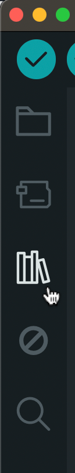

The Servo Library
To facilitate the code when working with servo motors, we should use the Servo library. A library is code that someone else wrote to makes it easier to make something happen without knowing the ins and outs of how to program it. It also makes the code a lot more readable.
To install a library, go the left hand side and click on the books icon.

Next, use the search bar to find the servo library by Michael Margolis, and install it.

After installing, example sketches should be found in the Examples
menu bar under “Examples from Custom Libraries”.
File -> Examples -> Servo.
Most Minimal Example
#include <Servo.h>
Servo myservo; // create servo object to control a servo
void setup() {
myservo.attach(9); // attaches the servo on pin 9 to the servo object
}
void loop() {
myservo.write(180); // tell servo to go to position in variable 'pos'
}Breakdown
#include <Servo.h>To include the library, you have to write this statement.
#include is written followed by the name of the file that
has the code for the library written. This Servo.h file is what the
library is. It is surrounded by these angle brackets.
Servo myservo; // create servo object to control a servoFor this library, there is an object called Servo, and it is given
the variable name myservo.
In programming, an object is similar to a library, in that it hides a bundle of code that makes it possible to create a reference of a thing with certain attributes. For example, an object called Human might have properties such as age, height, name.. and can perform actions like
human.walk(),human.sleep(),human.eat(). In this code’s case, there is an object called Servo that has the properties of a servo motor, with actions likeattach()andwrite().
myservo.attach(9); // attaches the servo on pin 9 to the servo objectAs said in the comment, this line tells Arduino that this servo is connected to pin 9.
myservo.write(180); // tell servo to go to position in variable 'pos'The write() method changes the position of the servo and
takes an angle between 0 - 180 degrees.
Play Around
Try changing the number in write() to see where the
servo moves.